Layout exploration screenshots
Visual proof for OpenClaw-layoutexploration: floating settings, agents hub, model picker modal, and Avatar Studio across desktop / wide / laptop. No operator secrets or local Comfy config.
Chat layout 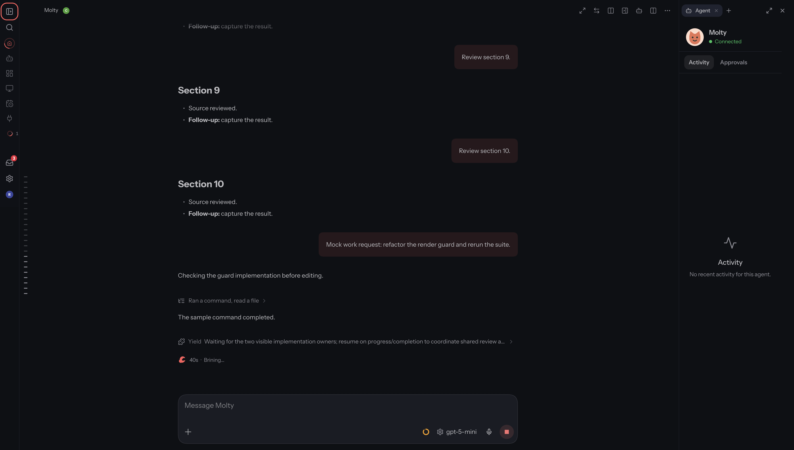
after-collapsed-rail.png 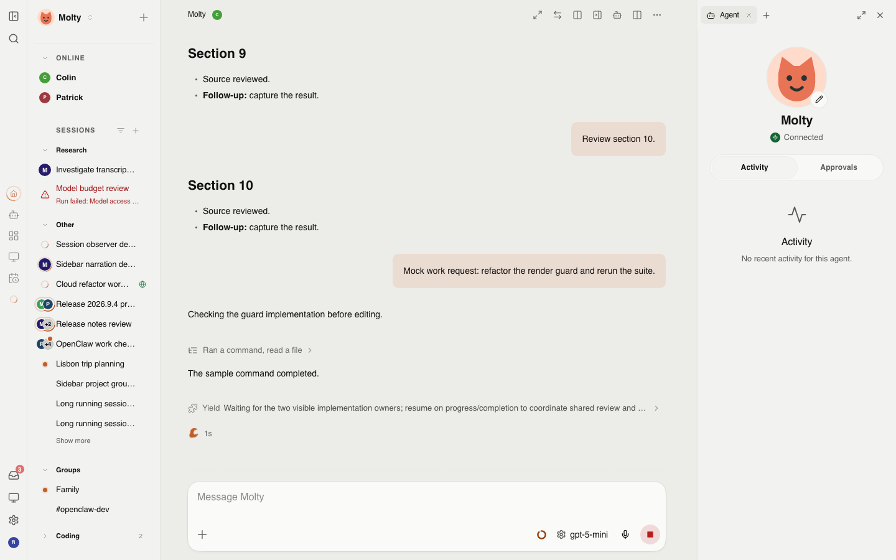
after-expanded.png 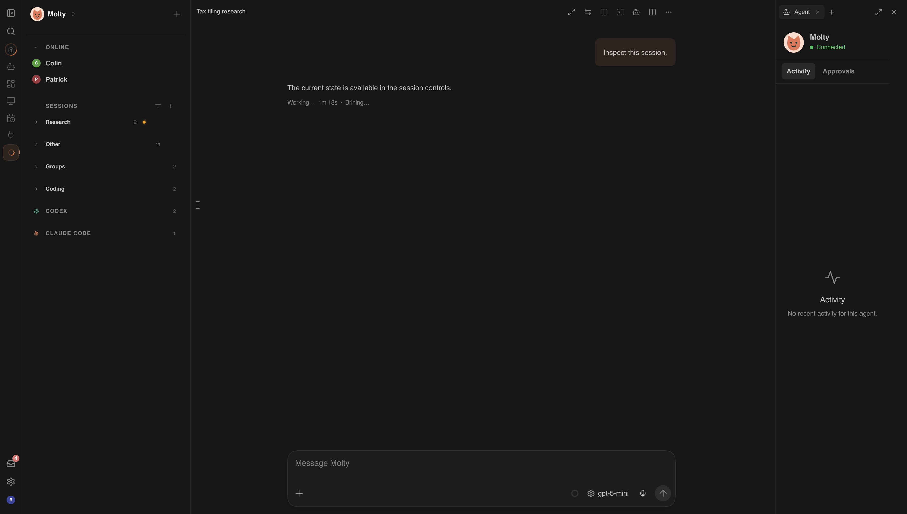
after-rams-expanded.png 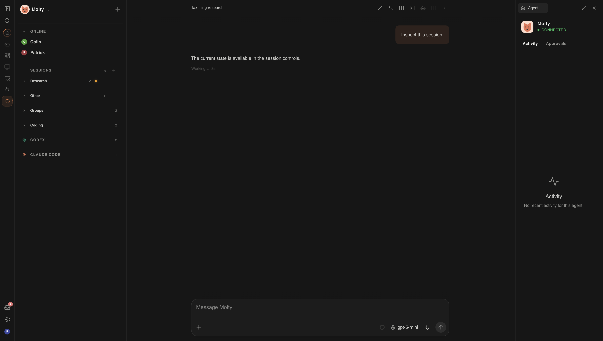
after-rams-rail-collapsed.png desktop-chat-expanded.png 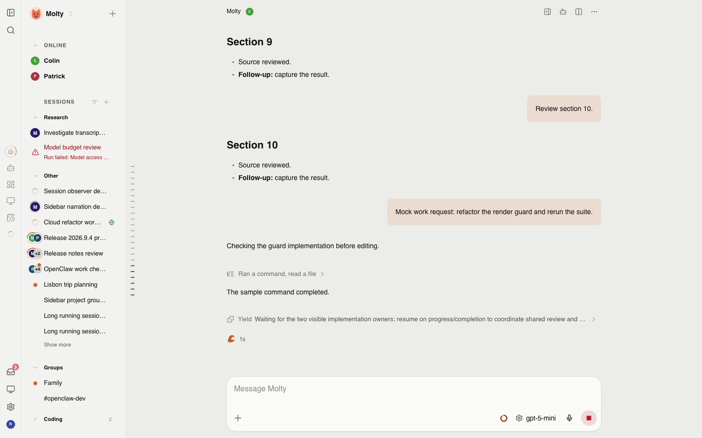
desktop-chat-rail-collapsed.png Settings float after-settings-agents.png 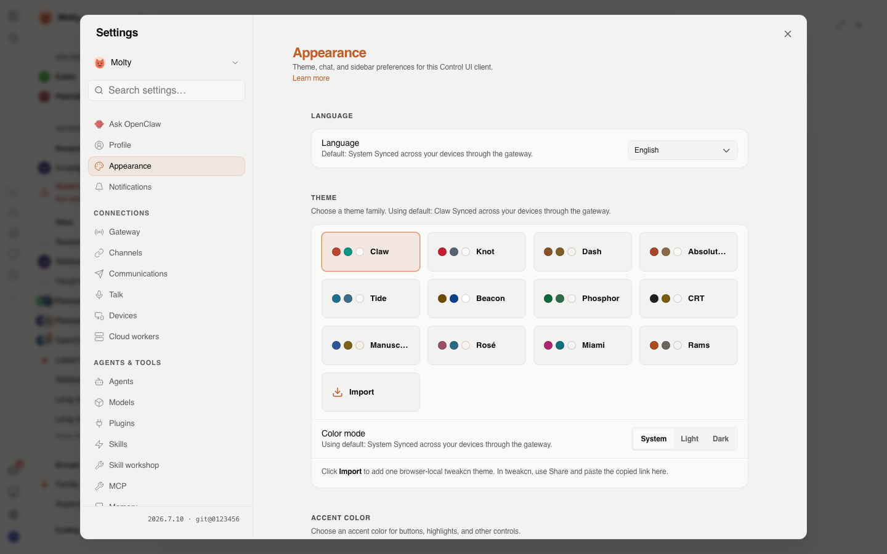
after-settings-float.png 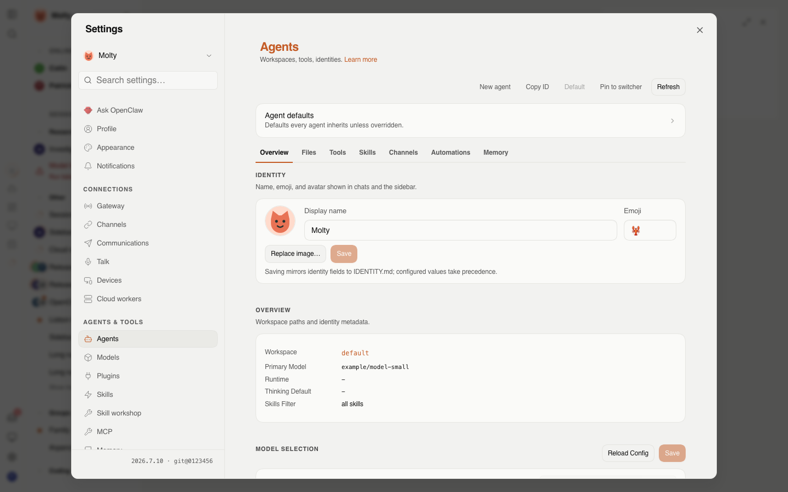
desktop-settings-agents.png desktop-settings-float.png 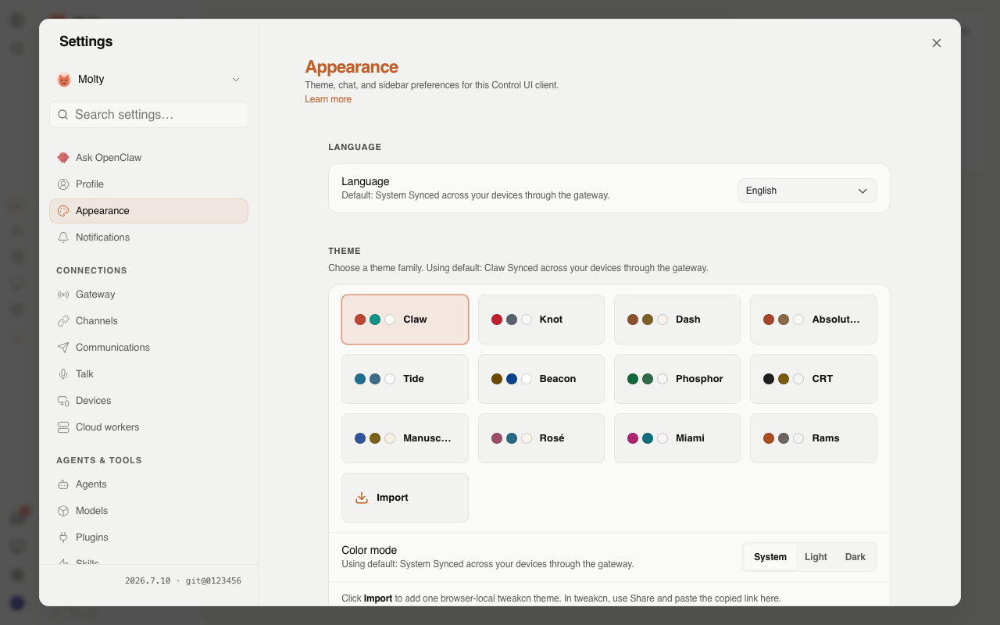
laptop-settings-float.png 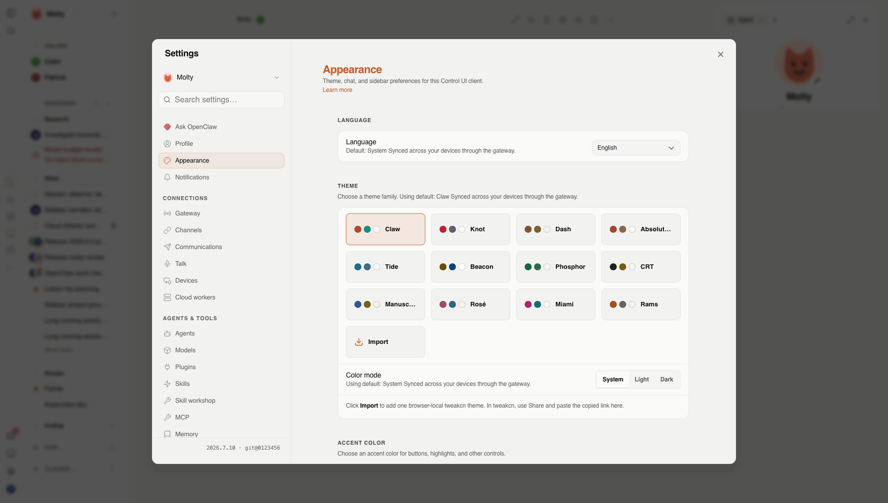
wide-settings-float.png Model picker after-model-picker-modal.png after-model-picker.png desktop-model-picker-modal.png 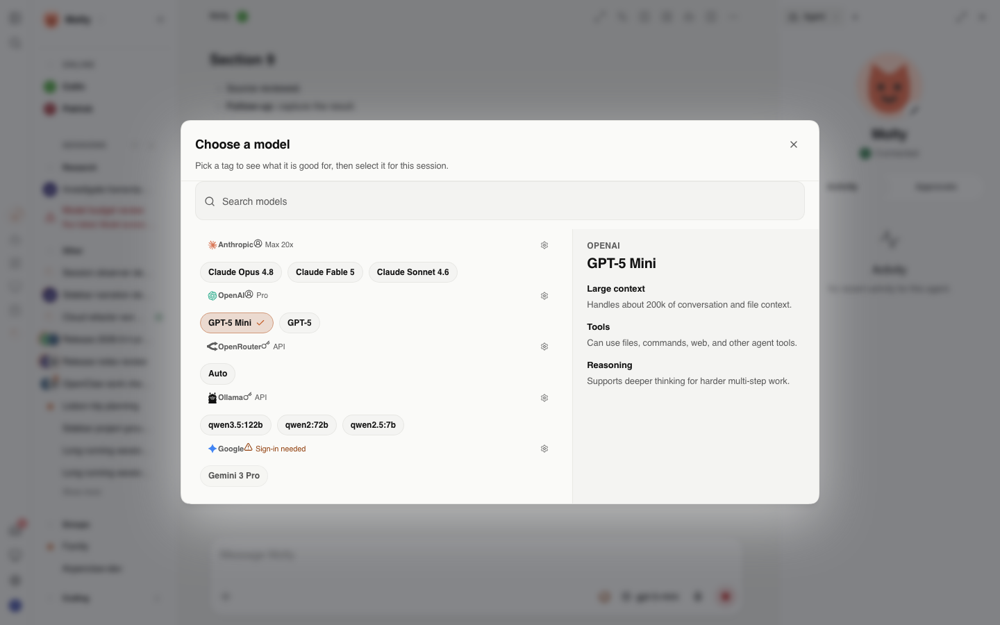
desktop-model-picker.png laptop-model-picker-modal.png 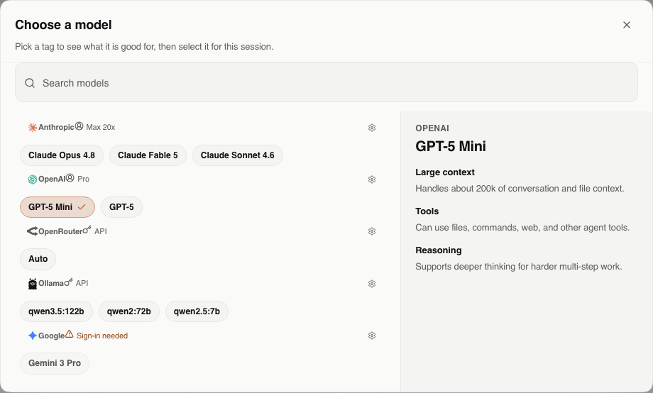
wide-model-picker-modal.png Avatar Studio 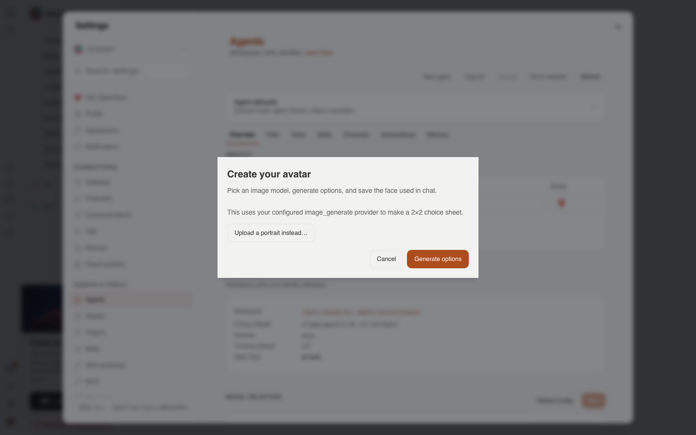
after-avatar-studio-provider.png 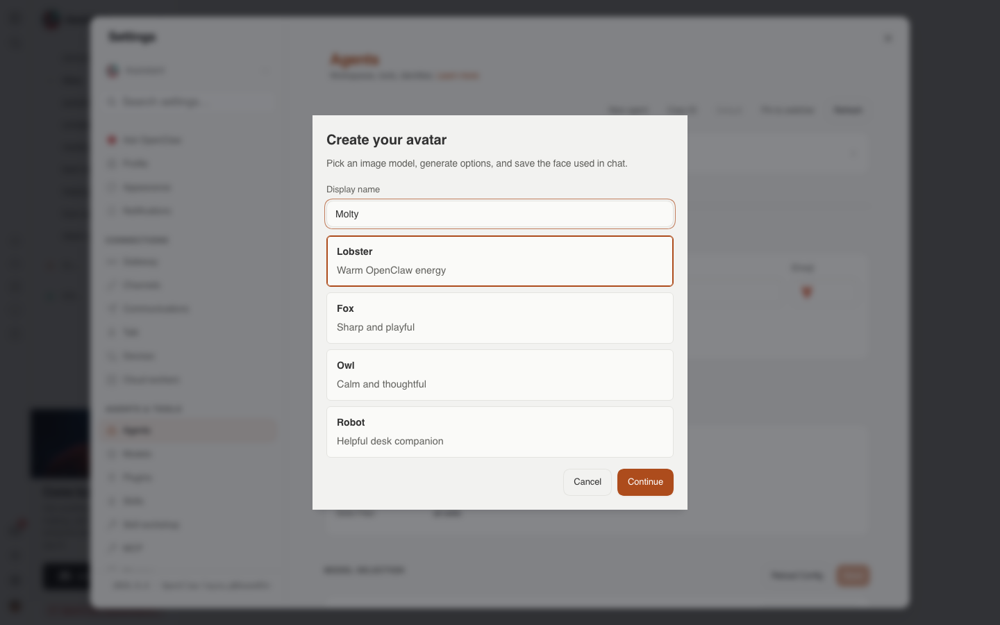
after-avatar-studio-style.png after-avatar-studio.png desktop-avatar-studio-provider.png desktop-avatar-studio-style.png 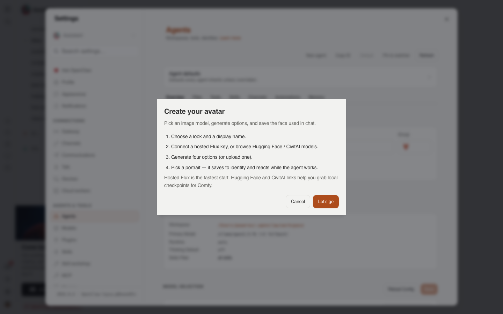
desktop-avatar-studio.png 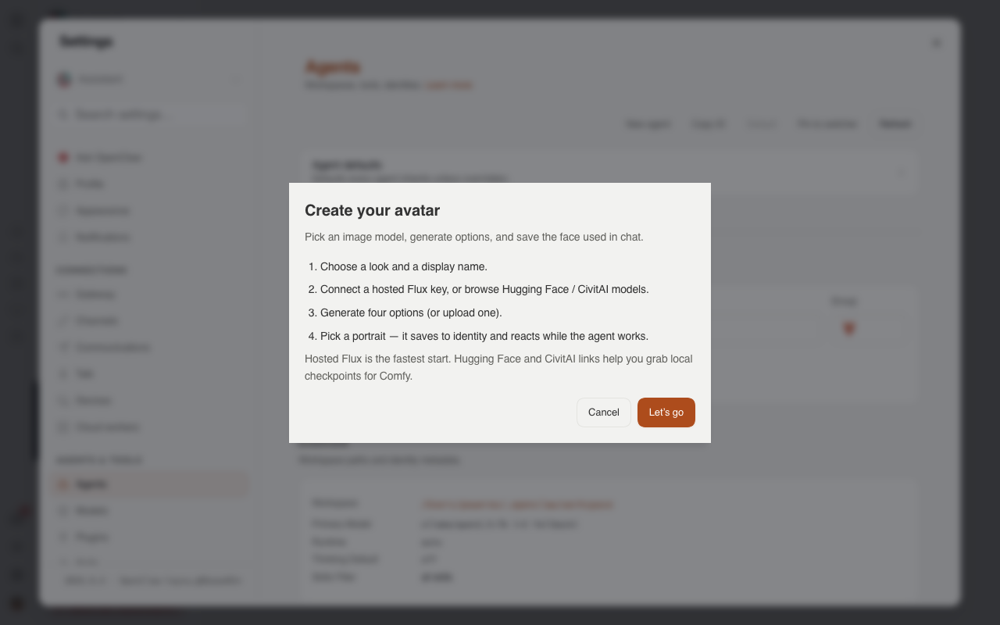
laptop-avatar-studio.png 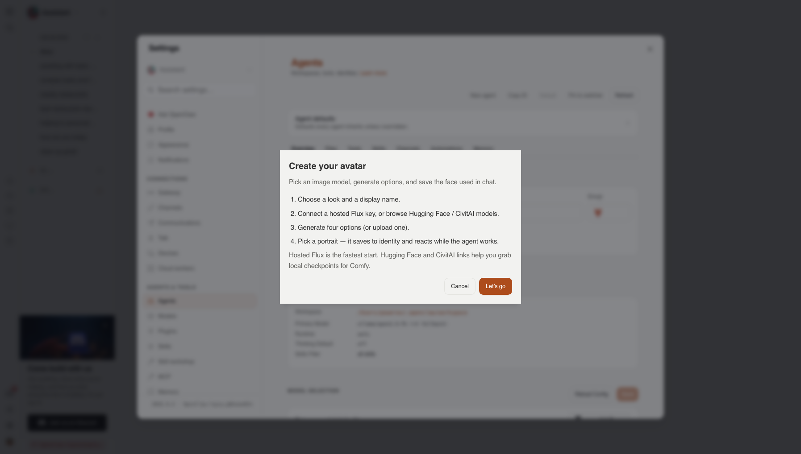
wide-avatar-studio.png Approvals / Rams after-agent-approvals.png after-rams-centered.png after-rams-expanded.png after-rams-rail-collapsed.png 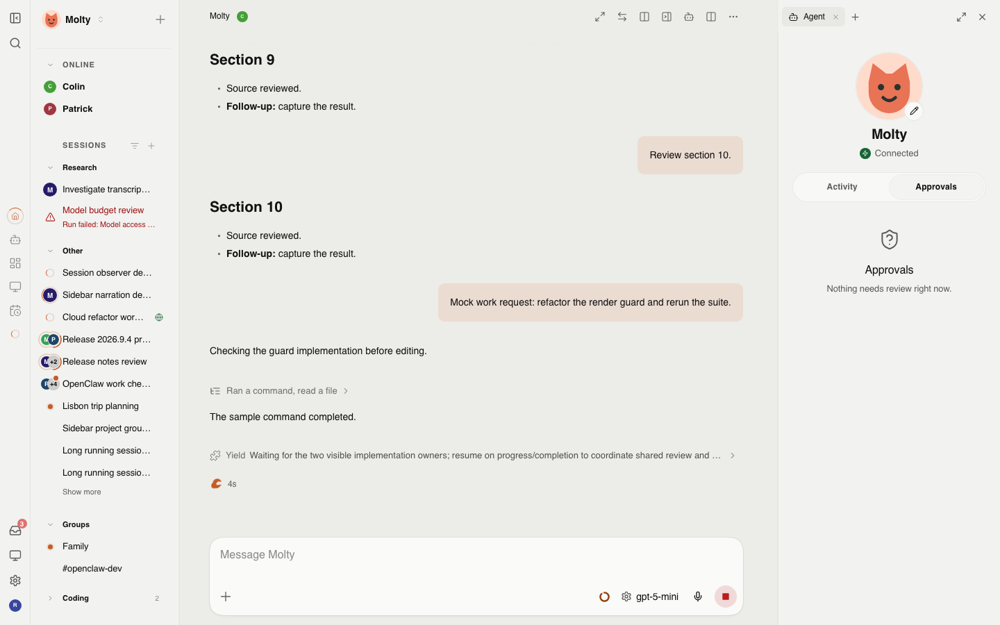
desktop-agent-approvals.png